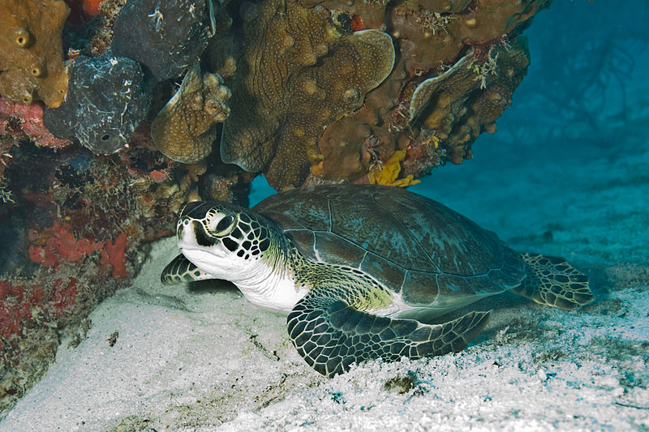
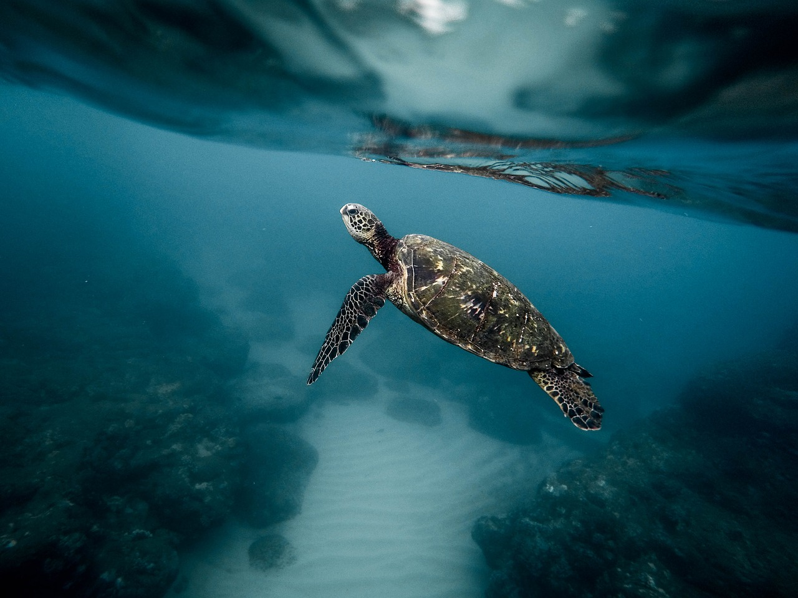

Threats
Human activities have tipped the scales against the survival of these ancient mariners over the last 200 years. Sea turtles are poached and over-exploited because they are slaughtered for their eggs, meat, skin, and shells. They also face habitat loss and inadvertent capture in fishing gear, termed bycatch. Climate change affects turtle breeding locations by changing sand temperatures, which affects the sex of hatchlings. Almost all sea turtle species are now endangered, with three of the seven remaining species highly endangered.
Overharvesting and Illegal Trade

Sea turtles are still being collected in an unsustainable manner, both for human consumption and for the trading of their parts. Many people around the world rely on turtle meat and eggs for sustenance and revenue. Turtles are also killed for medicine and religious ceremonies by some people. Every year, tens of thousands of sea turtles are killed in this manner, decimating populations of already endangered green and hawksbill turtles.
Habitat Loss
Sea turtles rely on beaches to lay their eggs. Uncontrolled coastal development, beach car traffic, and other human activities have directly destroyed or disrupted sea turtle nesting beaches all over the world. Lights from roads and buildings, for example, confuse hatchlings and direct them away from the water, and vehicle traffic on beaches compacts the sand, making it impossible for female turtles to dig nests. Onshore activities, such as land clearing and nutrient run-off from agriculture, harm and destroy turtle feeding habitats such as coral reefs and seagrass beds. Beach rehabilitation operations for safeguarding beachfront buildings, such as dredging and sand filling, have also been proved to be damaging.
Bycatch

Every year, hundreds of thousands of marine turtles are trapped in shrimp trawl nets, longline hooks, and fishing gill nets. They become bycatch in fisheries-animals trapped in nets intended for other species. Sea turtles must reach the surface to breathe, hence many perish when caught. The most serious threat to most sea turtles, particularly endangered loggerheads, greens, and leatherbacks, is accidental capture by fishing gear. As fishing activity expands, so does this threat.
Climate Change
Sea turtles will be impacted by rising nesting beach temperatures. Because sea turtles are reptiles, the gender of the hatchling in a nest is determined by the temperature of the sand in which the eggs incubate. Typically, eggs in the lower, cooler area of the nest develop into males, while eggs in the higher, warmer part of the nest develop into females. Scientists expect that when nest temperatures rise, there will be more female hatchlings than male, posing a severe threat to genetic diversity. Warmer ocean temperatures are also expected to have a severe impact on food resources for sea turtles and almost all marine species. Coral reefs, a vital food source for sea turtles, are in great danger. Moreover, rising sea levels will have an impact on sea turtle nesting beaches.
Pollution

Pollution can have major consequences for both sea turtles and the food they consume. For example, new research reveals that fibropapillomas, a condition that is killing many sea turtles, may be linked to pollution in the oceans and nearshore waterways. When pollution contaminates and kills aquatic plant and animal life, it also destroys sea turtle feeding habitats. Oil spills, as well as chemical and fertilizer runoff from cities, all contribute to water contamination. An estimated 36% of all oil contamination in the ocean comes from city drains and rivers.